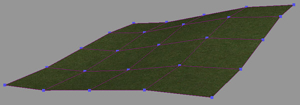
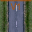
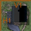
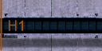
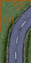

Restrictions
in X/Z axis set, no bend possible, only the corner vertices are
moved (tile is skewed)
Along with a tile's .p3d model file, the .cfl tile specification file is one of the most important
elements of a track piece. Each tile in-game is solely detected by the existence of this file.
Being located in [crashday]\trkdata\tiles, it contains the reference to the 3d model used and various other parameters. The game does not
require the .cfl file having the same filename as the .p3d file.
However, in order to create clean and structured custom content, it
is recommended to do so.
Below is an overview of the .cfl parameters
|
Example file: streetb1.cfl (straight country road) |
Explanation |
|
Crashday-FieldObject-File |
first static line |
|
- # tile name |
track piece name, this line is only used for custom track pieces that do not have an own category in track editor |
|
streetb1.p3d # Modelfile |
the link to the related .p3d 3d model file located in [crashday]\editor |
|
1 1 # tile dimensions X / Z |
width/height dimensions of the track piece (1 1 -> 20x20m; 2 2 -> 40x40m; 1 2 -> 20x40m; 2 1 -> 40x20m) |
|
GROUND_FLAT |
obsolete |
|
1 # Autolist in track editor |
set this value to “1” if you want it to be displayed in track editor, otherwise set it to “0” NOTE: Setting this to “0” can be useful if you have a track only consisting of custom pieces, but you do not want the user to set your track pieces separately (like the minigame skijump tiles) |
|
mountcr.cfl |
obsolete |
|
1.0 |
obsolete |
|
1 # possible to recover? |
this value is “1” if it is possible to recover on this track piece, otherwise “0” |
|
0 # Is tile a checkpoint? |
defines if this tile is a checkpoint or not (checkpoint “1”, no checkpoint “0”) NOTE: Any tile can be checkpoint as long as it has tile dimensions of "1 1" (20x20m). In case of a checkpoint the next line defines the extends of the checkpoint box. If this tile is no checkpoint next line will be omitted |
|
-7 7 7 -3 # checkpoint extends |
(only present if checkpoint=1) upper left and lower right corner of checkpoint box relative to the “main” mesh's center in meters (-x +y x -y) |
|
0 # freely roam around? |
is it possible to freely roam across the whole tile without hitting anything? (e.g. for planar tiles, heavily speeds up AI drivers) |
|
default # dynamic object dropping height |
vertical height in meters relative to tile ground at which dynamic objects (e.g. barrel, road sign) are "dropped" onto the tile. E.g. to put a dynamic object into a tunnel tile, drop it from a height like "-4", so it doesn't land on the ground above the tunnel). "default" is a dropping height of around +100 meters |
|
V1 STOP #bend restrictions |
defines axes without height smoothing points in the model to prevent bending along these. A space seperated list of any of these words "H1", "V1", "H2", "V2", ending with the word "STOP". See below for a detailed explanation. Also look up Modeling and texturing guidelines for further information. |
|
|
blank line |
|
------------------- VEGETATION ------------------- |
START OF VEGETATION SECTION, generated by a tool (see Vegetation setup) |
Setting bend restrictions

No
restrictions set, the tile will be bend very smooth, this is only
possible when tile is subdivided every 5m (see Modeling and texturing guidelines modelling)
If
a heightmap is applied to a Crashday track every track piece will be
bent either more or less. With bend restrictions, defined in the
.cfl-files, you change a tile's bend behaviour. See the images below:
Restrictions
in X/Z axis set, no bend possible, only the corner vertices are
moved (tile is skewed)
As you see on these images the nice and smoothly look (left image) might not be wanted on every tile like for example houses (right image).
To have influence on this Crashday offers the bend restriction parameter. The following list shows some examples of possible values:
 The
orange line means, no bend in this marked axis!
The
orange line means, no bend in this marked axis!
|
|
 |
 |
 |
|
|
no restrictions, bend all axes |
V1 restricted, no bend along X axis |
V1, H1 restricted, no bend at all |
H1 restricted, no bend along Z axis |
V1, V2, H1 restricted, no bend at all |
|
|
 |
|
|
|
|
V1, H1, restricted, no bend along X axis at all, no bend along Z axis on "upper" half of the tile |
||||
|
V1, H1, H2 restricted, no bend at all |
V1, V2, H1, H2 restricted, no bend at all |
|||
|
V2, H2 restricted, any bend except for "upper left" quarter permitted |
V2
and H2 are only available on tiles bigger than 1x1 (20x20m)!
It is possible to set the “V1”, “V2”, “H1” and “H2” values in any sequence. Be sure to end the bend restrictions line with “STOP” to mark there won't follow any more values.